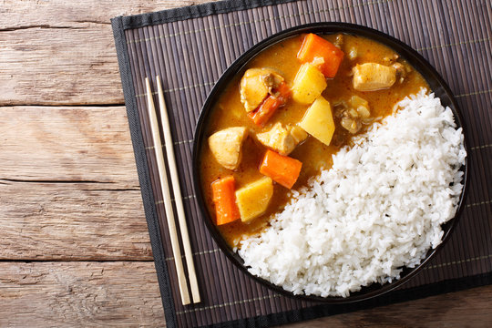

Homepage
Japanese Curry

Description
Japanese curry is a quick, easy, and filling meal that is a staple in japanese homes.
This recipe will use curry roux blocks, as it is a more conveinent way to make curry
while still keeping the same texture of flavor as a home made roux with curry powder.
Curry is very quick and easy to make and only needs one pot to make. It is traditionally
accompanied by rice. Japanese curry is thick, rich, sweet and savory. It can also be spicy if you want it to be!
Ingredients
- 2 cups Calrose White Rice(or any white rice)
- 2 Large Chicken Breasts (add more if desired)
- 1 S&B Golden Curry block
- 1 Yellow Onion
- 2 Carrots
- 1 Large Yukon Gold or Russet Potato
- 4 Cups of Unsalted Chicken Broth
- 4 Tablespoons Butter
- 4 Medium Cloves Garlic
- 1 1-inch knob Ginger
- 1 Cup Frozen Green Peas
- 2 Tablespoons Worchester Sauce
- 1 Tablespoon Ketchup
- 2 Bay Leaves
- Salt and freshly ground Pepper
Instructions
-
Cook 2 cups of white rice in a rice cooker. Cut the chicken, carrots, and potatoes into roughly 1/2 inch chunks.
Slice onion into quarter-inch-width strips. Mince garlic and ginger.
-
In a large skillet, heat the butter over high heat until lightly smoking.
Reduce the heat to medium-high and add chicken.
Occasionally stir and remove once lightly browned.
Then add the onions and seasion with salt and pepper.
Cook while frequently stirring and onions are softened, about 3-5 minutes.
-
Add ginger and garlic and stir until aromatic, about 30 seconds.
Then add back the chicken along with the potatoes, carrots, bay leaves, and the chicken broth.
Stir to mix ingredients together then bring to a simmer.
Add ketchup, worchester sauce, and the curry block; then reduce heat to maintain a bare simmer.
Stir to mix in the curry block for about 1 minute.
Cover and cook until the potatoes and carrots are tender while stirring occasionally, about 10 minutes.
-
By now, the potatoes and carrots should be tender, and the curry should be thick, with the curry block fully dissolved and incorporated.
All thats left is to stir in the frozen peas, serve with rice, and enjoy!